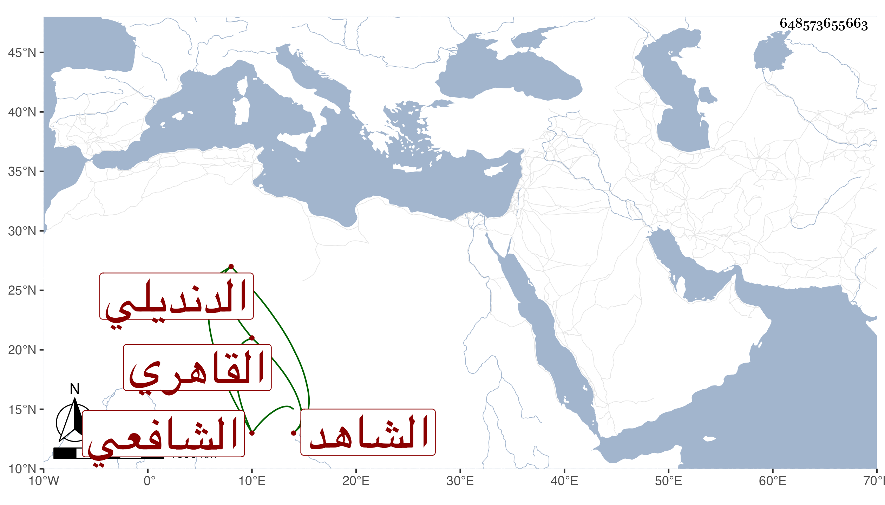

0902Sakhawi.DawLamic.ITO20230111-ara1.EIS1600.648573655663
Biography ID: 648573655663
447
عثمان بن أحمد بن عثمان الفخر أبو عمرو الدنديلي القاهري الشافعي الشاهد ، وسمى شيخنا في تاريخه أباه محمدا وأورده في معجمه على الصواب . ولد سنة إحدى وأربعين وسبعمائة كما قرأته بخطه وسمع من العرضي غالب مسند أحمد وبعض المنامات لابن أبي الدنيا وبعض فوائد تمام وجزء ابن حذلم واليسير من أول أبي داود ومن أبى الحرم القلانسي جزءين من فوائد تمام وحدث سمع منه الأئمة وأسمع شيخنا عليه ولده بحضرته جزء ابن حذلم وذكره المقريزي في عقوده وينظر قوله أنه سمع من الكمال عبد الرحيم بن عبد الواحد المقدسي وأما قوله وقد تجاوز ستين سنة فهو غلط منه أو من غيره ، ومات في جمادى الآخرة سنة ثمان وعشرين وقد جاز الثمانين .
